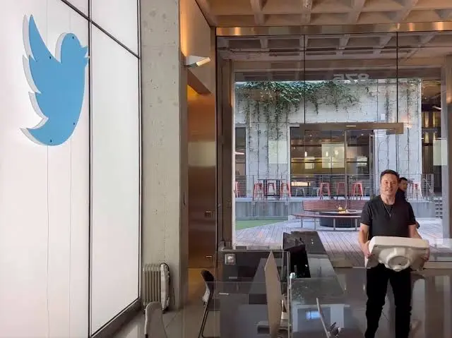
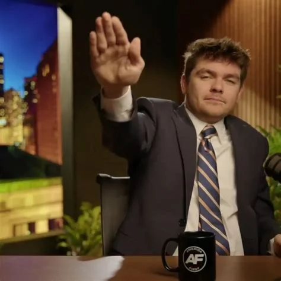
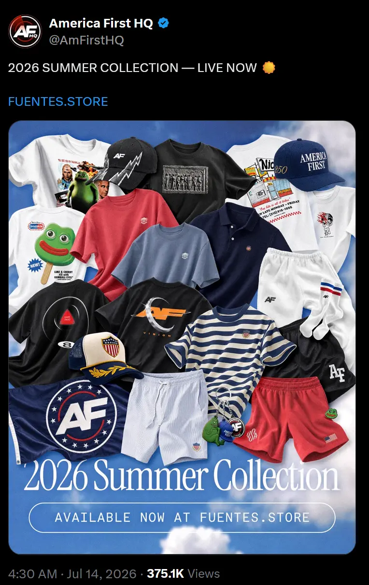
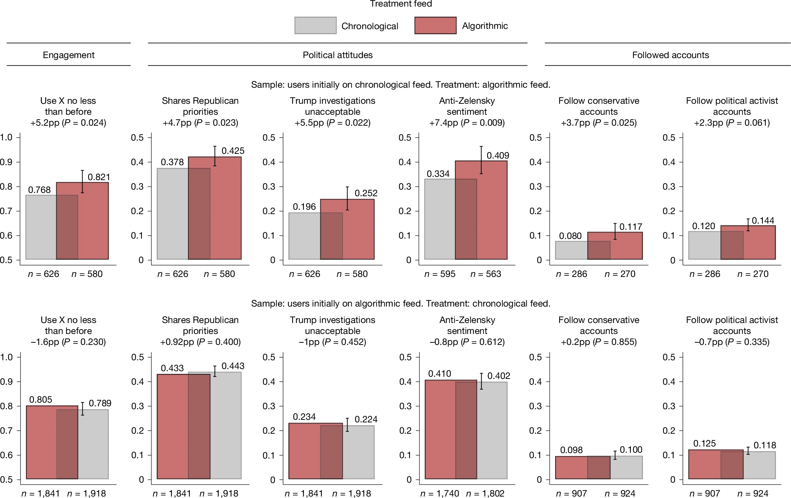

BCM 222 Digital Ethnographies
-
Academic Works > BCM 222 Global Media and Social Justices > Assignment 1
Question
In what way does the private ownership of platforms create problems of social justice?
Pick ONE platform and ONE case to talk about
Preface
In 2022, Elon Musk purchased Twitter and reinstated over 60k Twitter / X accounts (IANS, 2022)1. Named as the Big Bang, this restoration has reinstateed prominent right-leaning figures. Such as Donald Trump, Alex Jones, Andrew Tate, Nick Fuentes and etc.
In this blog post, we examine how this purchase was mainly used as a political movement, and use several figures to explain why it contributes to social injustice as a political tool.
Background - The Twitter Purchase
During 2022, 2 years before Trump's 2nd run as a presidental candidate. Elon Musk purchased Twitter and renamed it to X, he argued that extremists should be allowed on Twitter / X due to his support to free speech. And made the decision to reinstate over 60k Twitter accounts which were banned due to platform rule violation, mostly due to hate speeches or radical views. The list of unbanned accounts included a considerable ammount of right-wing politcal figures, as listed at the start of this article.

Let that sink in, Musk on his day buying Twitter
This led to implications that this purchase of Twitter is no simple transfer of ownership, Musk was banning Chad Loder (a left-leaning figure) and left-leaning journalists like CNN, New York Times and Washington Post etc, "Musk seems to be just stamping out accounts that he doesn’t like” as described by O’Sullivan (Abbruzzese J. et al, 2022)2 It is evident that Musk was using Twitter as a political tool, to censor opposing parties and aiding the right wing.
Figure
Nick Fuentes

Nick Fuentes, who "has been labeled a white supremacist by the FBI" (Brewster J., 2021)3, and a holocaust denier3, has their Twitter account banned in 2021 for violating platform rules. Despite being called out several times by the Anti Defamation League, their supporters, Nick has founded America First in 2017 and amassed his followers, known as the Groypers to "champion the role of God in society, upholding the principles of Nationalism, Christianity, and Traditionalism" (ADL, 2021)4

Who are the groypers?
According to ADL (2021)4, the groypers are mostly composed of younger mainstream conservatives, "who are then exposed to the group's extremist ideology"
Their political stances more polarized than the traditional right, to the point where it is documented that they actively infiltrates traditional right activities, such as the Turning Point USA in their talks, posing as legitimate participants to challenge the founder's (Charlie Kirk) views via Q&A trolls. Also known as the Groyper War 1 (ISD, 20225)(Maly I., 2029)6, They aim to radicalize the right ideology even further.
Twitter's unbanning effect on Nick Fuentes movements
After his account was reinstated by Musk, "his followers appears to have grown from roughly 140,000 to more than 750,000. His “America First” streaming show viewership on Rumble has quintupled to around 500,000." (New York Times, n.d.)7
As described in the article (New York Times, n.d.)7, Fuentes insisted that he was an underground figure, and regaining access to his Twitter account allowed him to spew radical right extremist ideologies on Twitter, including "Cheap Rage Bait" such as "Your body, My Choice" and even denying the holocaust. While Fuentes claimed that these tweets are only trolling, they gained alot of attraction and even bigger and renowned right-winged figures started "fighting with him". Further establishing his footing as a prominent figure in influencing right politics.
As described in the article (New York Times, n.d.)7, Fuentes insisted that he was an underground figure, and regaining access to his Twitter account allowed him to spew radical right extremist ideologies on Twitter, including "Cheap Rage Bait" such as "Your body, My Choice" and even denying the holocaust. While Fuentes claimed that these tweets are only trolling, they gained alot of attraction and even bigger and renowned right-winged figures started "fighting with him". Further establishing his footing as a prominent figure in influencing right politics.
While Fuentes was banned from PayPal (Mak T., 2021)8, he was deprived of his conventional funding sources. As such, being reinstated on Twitter helped directing followers into buying his American First HQ merchandizes, as well as towards his off-platform livestreams, where he made money off superchats.

Figure
Donald Trump
While Donald Trump did not initally return to Twitter after his account had been reinstated in 2022, he made re-engaged Twitter at full force during his time as a presidental candidate, and was massively aided by Musk-tuned Twitter algorithim.
According to Gauthier G. et al (2026)9, Twitter's algorithm widely promoted Trump's conservative, and people who uses the algorithmatic feeds over the chronological feed are more likely to view that criminal investigation of the US president is unacceptable. Effectively exposing them to more right-winged opinions, shifting them into more conservative positions.
This effect of changing their political view is lasting, as the study have pointed out that, turning off the algorithmic feed back to chronological feed does not reverse their political attitudes.

Taken from source 9
Back onto Trump, the prioritization of the algorithmatic feeds means that Trump favored republican issues, (e.g.: inflation, immigration and crime) are more pronounced than left-wing parties'. Not only that, it is also found that "They were also 5.5 percentage points more likely to believe that the investigations into Trump are unacceptable" (Gauthier G. et al, 2026)9. Thus acting as Trump's personal filter to negate and counter electoral damage of negative media coverage all while promoting his election rally.
Further reading: https://link.springer.com/article/10.1140/epjds/s13688-024-00456-3
Conclusion
After examinating Twitter's role on such individuals, it is evident that Musk's buyout is no simple transaction, but rather an orchestrated politcal move. This is solidified by the fact the right-winged figures such as Fuentes and Trump's have their social status elevated, while the opposing parties have their tweets removed by the algorithim.
- 1 - IANS. (2022, November 30). Musk starts reinstating 62K suspended Twitter accounts as “Big Bang” process. National Herald.
- https://www.nationalheraldindia.com/international/musk-starts-reinstating-62k-suspended-twitter-accounts-as-big-bang-process
- 2 - Abbruzzese J. et al, 2022. Twitter suspends journalists who have been covering Elon Musk and the company.
- NBC News. Retrieved September 30, 2026
- https://https://www.nbcnews.com/tech/social-media/twitter-suspends-journalists-covering-elon-musk-company-rcna62032
- 3 - Brewster, J. (2021, July 9). Twitter Bans White Nationalist Leader Nick Fuentes, Ally Of Arizona Republican Rep. Gosar. Forbes.
- https://www.forbes.com/sites/jackbrewster/2021/07/09/twitter-bans-white-nationalist-leader-nick-fuentes-ally-of-arizona-republican-rep-gosar
- 4 - Nicholas J. Fuentes: Five Things to Know. (2024). Adl.Org.
- https://www.adl.org/resources/article/nicholas-j-fuentes-five-things-know
- 5 - Groypers. (2026, February 3). Institute for Strategic Dialogue.
- https://www.isdglobal.org/isd-explainer/groypers
- 6 - Maly, I. (2019, October 31). Charlie Kirk, his Culture War Tour and Groyper trolls. Diggitmagazine.Com.
- https://www.diggitmagazine.com/column/charlie-kirk-culture-war-groyper-trolls
- 7 - Draper, R. (2025, September 9). Nick Fuentes: A White Nationalist Problem for the Right. Nytimes.Com; The New York Times.
- https://www.nytimes.com/2025/09/09/us/politics/nick-fuentes-trump.html
- 8 - Mak, T. (2021, March 16). Across The Internet, A Game Of Whac-A-Mole Is Underway To Root Out Extremism. NPR.
- https://www.npr.org/2021/03/16/972519460/across-the-internet-a-game-of-whac-a-mole-is-underway-to-root-out-extremism
- 9 - Gauthier, G., Hodler, R., Widmer, P., & Zhuravskaya, E. (2026). The political effects of X’s feed algorithm. Nature, 652(8109), 416–423.
- https://doi.org/10.1038/s41586-026-10098-2